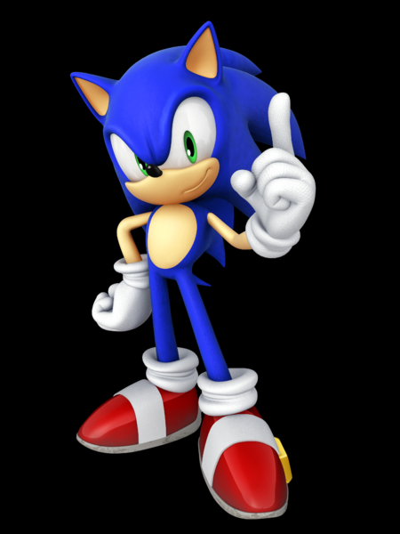
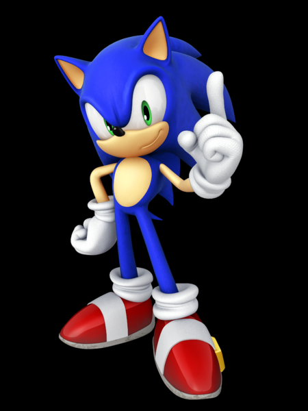
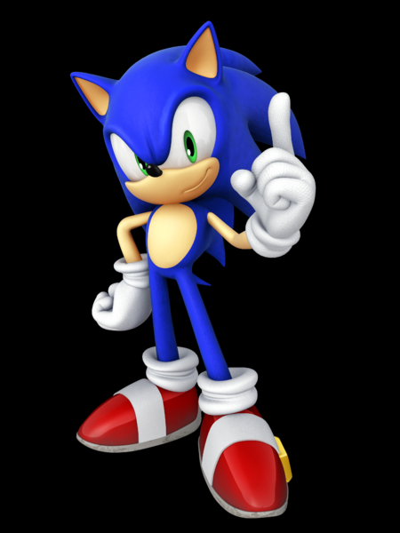
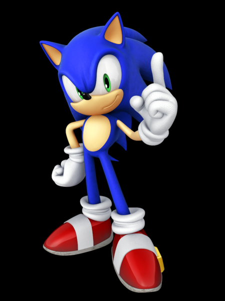

 

El desarrollo de videojuegos es un campo multidisciplinario que combina creatividad y tecnología para crear experiencias interactivas. Implica el diseño, programación, arte y música para dar vida a mundos virtuales donde los jugadores pueden explorar y participar en diversas actividades. A lo largo de los años, ha evolucionado considerablemente, con el surgimiento de potentes motores gráficos y herramientas especializadas que permiten a los desarrolladores, tanto profesionales como aficionados, crear juegos de calidad con mayor facilidad.
El proceso de desarrollo de un videojuego comienza con una idea o concepto, que luego se transforma en un diseño más detallado que define las mecánicas de juego, la estética visual y los objetivos. Se utilizan motores gráficos como Unity o Unreal Engine para dar vida al juego, permitiendo a los desarrolladores crear mundos virtuales, personajes y escenarios. Además, el diseño de niveles y la creación de inteligencia artificial juegan un rol crucial en la forma en que los jugadores interactúan con el juego. A lo largo del desarrollo, el equipo trabaja en diferentes etapas, que incluyen la programación, el testeo y la corrección de errores, hasta llegar a una versión final pulida lista para ser lanzada al mercado.